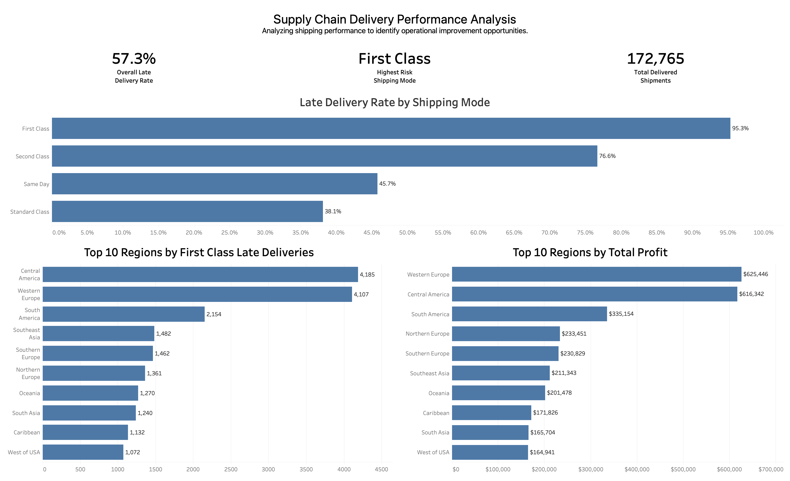
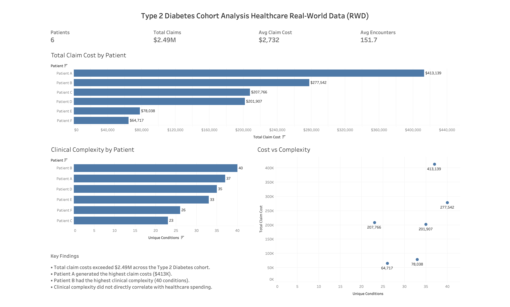
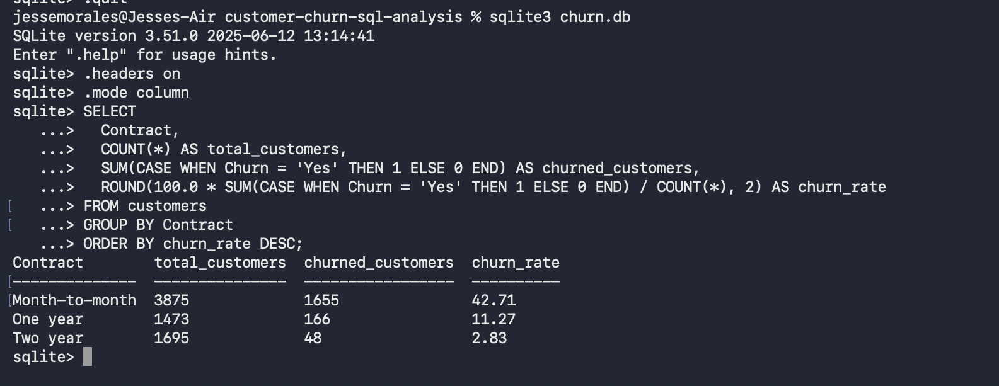
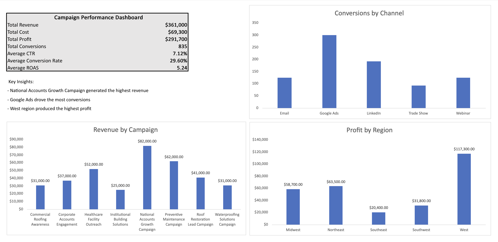

SQL | Excel | Tableau | Python
Computer Science graduate with 7+ years of operations experience, using data to identify trends, validate information, investigate problems, and support better business decisions.
I recently earned a B.S. in Computer Science from Southern New Hampshire University while working full time. I have 7+ years of experience in distribution and shipping operations, where I developed strong skills in data accuracy, operational tracking, problem solving, and process improvement.
I also work as a Soccer Data Operator, where I record and classify match events while maintaining data accuracy and consistency. I am building my career in analytics with a focus on SQL, Excel, Tableau, Python, reporting, and business analysis. My goal is to use data to identify trends, explain performance, investigate issues, and help teams make better decisions.
Selected analytics projects focused on business performance, operational insights, customer behavior, and data-driven decision making.

SQL | SQLite | Python | Tableau
Analyzed 180,000+ shipment records to evaluate delivery performance and identify major differences in late-delivery rates across shipping modes.
View Case Study →
SQL | SQLite | Python | Tableau
Analyzed healthcare data involving patients, conditions, medications, encounters, procedures, and claims to evaluate patient populations and clinical trial feasibility.
View Case Study →
SQL | SQLite
Analyzed 7,043 telecom customers to identify churn patterns related to contract type, customer tenure, and other customer characteristics.
View Case Study →
Excel
Built an Excel dashboard analyzing revenue, cost, profit, conversions, click-through rate, conversion rate, and return on ad spend.
View Case Study →Sportec Solutions
Walmart Distribution Center
Southern New Hampshire University
Earned while working full time, with coursework and projects focused on programming, databases, data analysis, and problem solving.
SQL, Excel, Python, SQLite, Power Query
Tableau, Excel Dashboards, KPI Reporting, Data Visualization
Trend Analysis, Root Cause Analysis, Data Validation, Data Reconciliation, Operational Analysis
View or download my resume for a summary of my experience, technical skills, education, and analytics projects.